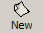
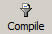
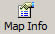
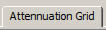

GloryLands Design Interface
The toolbar
On the top-most window area there is a toolbar from wich you can perform the basic operations:
| Fig.A : The design interface |
-  Button, creates a new, blank map
- Button opens a previously saved project
- Button quickly saves the current project
 Button saves the current project with a different name
Button saves the current project with a different name
-  Button compiles the file into a GameEngine-Readable format
-  Button configures the current map
- Button opens the help screen
The Side Bar
On the window's right side, you can access the design bar. From there you can select what to place on the active grid. This bar has two tabs:
- Tab, brings on the Game objects list. Theese objects can be placed on the map in order to design the environment you want.
The gray list on the top contains the object groups available for inserting, while the image list below it contains the actual objects. -  Tab, brings on the Attennuation Grid editor. This pannel contains a vertical slider. Scrolling the slider selects a different attennuation value (attennuation = difficulty to enter a specific tile). The bottom-most position of the slider has attenuation value 0% (that means the player can enter a tile without any difficulty), while the top-most position has attennuation value 100% (that means the player cannot enter this tile)
The Map Information Dialog
The map information dialog consists of two groups: The Stistics and the Appearence. On the statistics group you can view some usefull information about the currently active grid. On the Appearence, you can change the map's background (default) tile.
| Fig.B : The map info dialog |
The Tile browsing Dialog
If you hit "Change" on the above dialog, a new dialog is shown:
| Fig.C : The select Tile Dialog |
From this dialog, you can select the tile you want for background. The list on the left shows all the available tilesets, while the grid on the right shows the actual tiles those tilesets contain. You can navigate through the tilesets with the two arrow-buttons. Click on the tile you want to use to close the window and apply it, or hit Cancel to abort the operation.